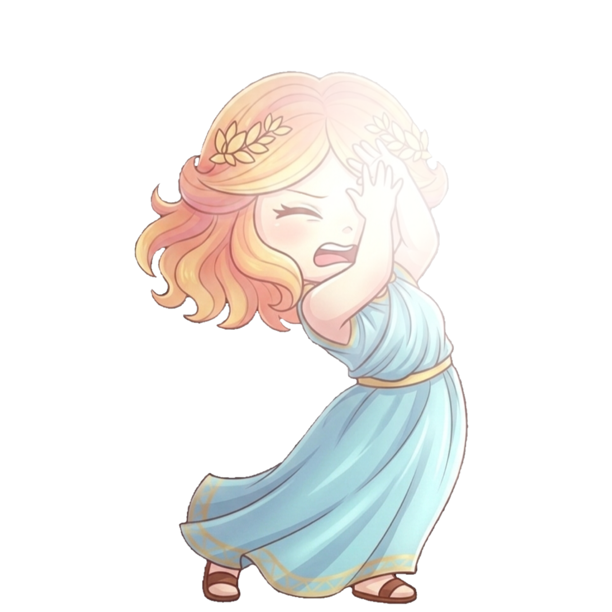

What Each Icon Represents
The meanings of each icon for the Overall Possibility:
High Chance
Possible
Low Chance
Foggy Sky

Too Bright City Lights
* Cloud overlay: Clouds appear on icons when activity is high but visibility is blocked by thick cloud cover.
About the mascot
Auroras are named after Aurōra, the Roman goddess of dawn. She symbolizes the arrival of light and creativity.
Tap to close